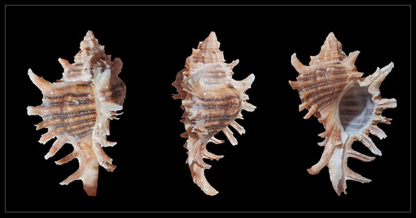
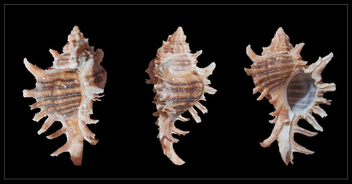
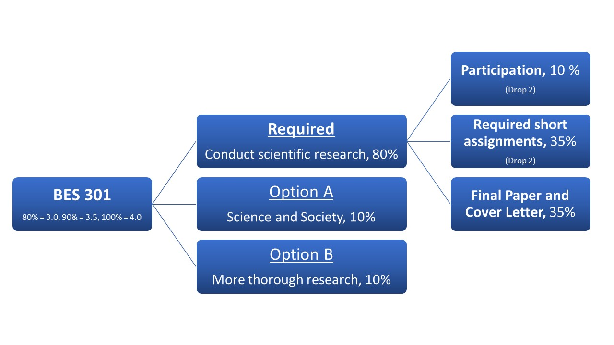

BES 301A
˜
Grading
 


To help alleviate stress and focus on learning, I grade all my assignments as complete/incomplete. My instructions for each assignment will be clear, so you can grade your own work before turning it into to guarantee that you'll pass it. In case you have questions beforehand, we'll go over assignments in class before they are due. If you pass the required assignments, you are guaranteed a grade of 3.0.
The main focus of this course is completing a scientific research project, all the way from coming up with a research idea to writing up the results in a scientific paper. Completing all of the work to meet this goal is required, and it will earn you a grade of 3.0. This is the bolded stream in the figure below:
If you want to explore who becomes scientists and how science functions in society, and you want a higher grade, then you can complete Option A: Science and Society. Completing these assignments will add another 10% to your grade, giving you a 3.5.
If you want to have a deeper research experience, for example by learning more statistics tests, and you want a higher grade, then you can complete Option B: More Thorough Research. Science and Society. Completing these assignments will add another 10% and 0.5 points to your grade.
So, those of you who are seeking a 4.0 will need to complete the required assignments, Option A, and Option B.
You determine your grade for this course by choosing which assignments to complete. The advantage of this approach is that you decide how much work you wish to do. If you complete your work on time and satisfactorily, you will receive the grade you intended. So, plan ahead, thinking about all of your obligations and responsibilities this quarter, and also determine what grade you want or need. All of the required assignments are intended help you pass the final project. I respect your choice about what to complete.
Let’s focus on the required assignments for a moment. Every day that we meet, you’ll complete some activities in your digital lab notebook, a google doc that you share with me. At the end of class, please go to the first page of your digital lab notebook and check off whether you’ve done the work. These exercises are 10% of your grade. I'll drop your two lowest participation grades.
You have required assignments to complete each week that help you complete your final research product. These account for 35% of your grade. I'll drop your two lowest short assignment grades. Because this is a hybrid course, there are a lot of them to compensate for the time we're not in class. These assignments typically take 6-12 hours a week.
All of these other activities culminate in writing a scientific paper about your research. That, and a cover letter of the sort that scientists submit with revisions of their papers they send to scientific journals, will make up your final project. That’s 35% of your grade.
What if I get an incomplete on an assignment?
Making mistakes—and correcting them—are part of learning! If your receive an incomplete on an assignment that you turned in, then you can redo it and resubmit it within a week of having the grade released.
Late Policy
Because I prepare for class by grading your homework, it’s important for you to turn things in on time. Homework assignments are due by end of the day (midnight) every Thursday. You have an automatic grace period of 2 days for each homework assignment with no penalty. Please use these exensions carefully, though, because I need to prepare for class on Fridays. After two days, I will not accept late work.